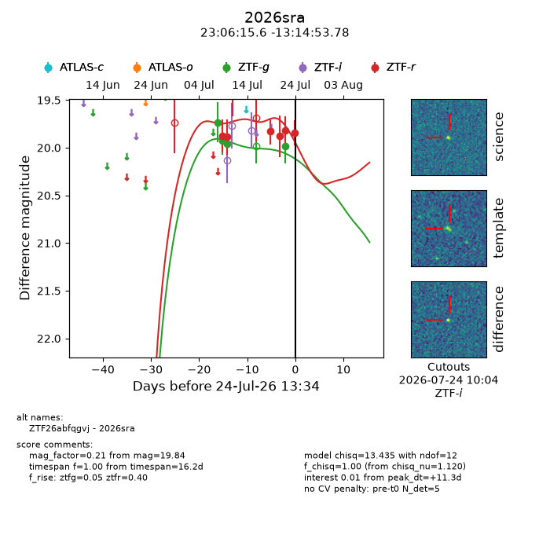
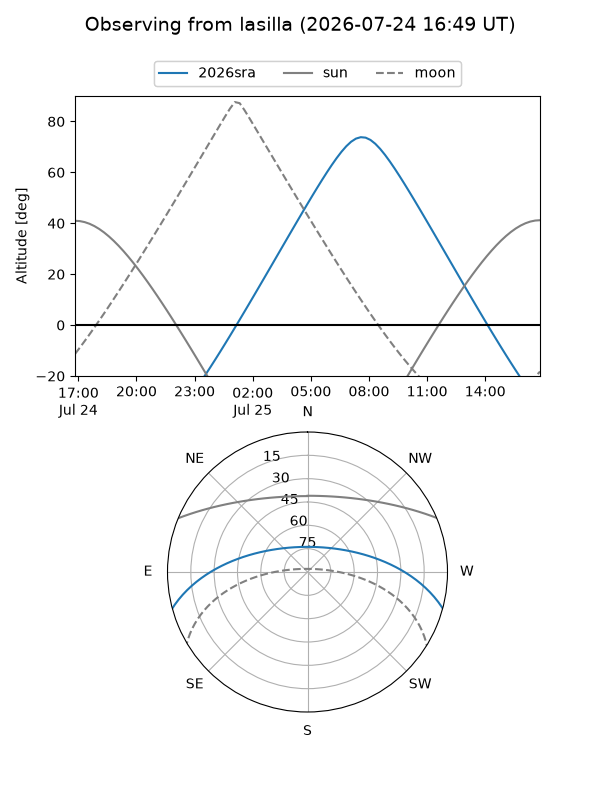
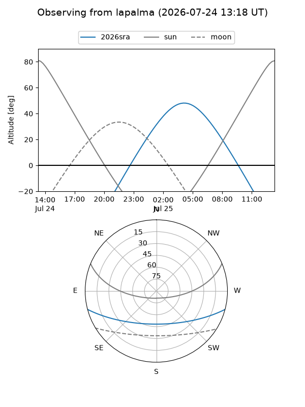
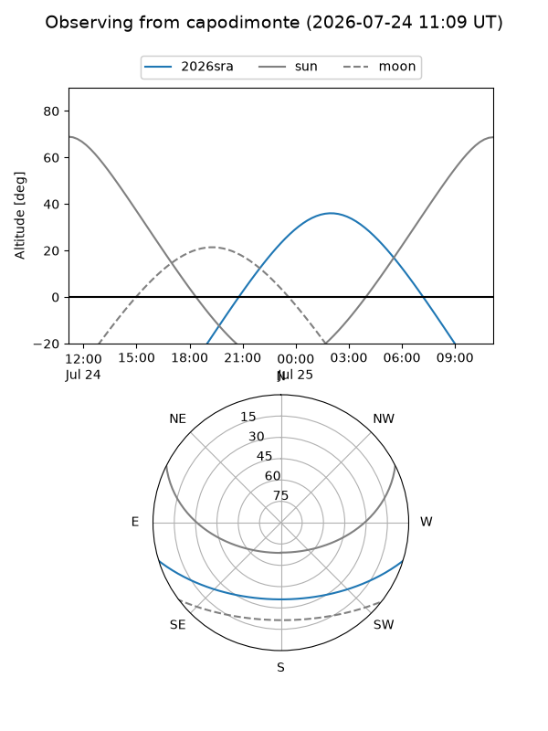
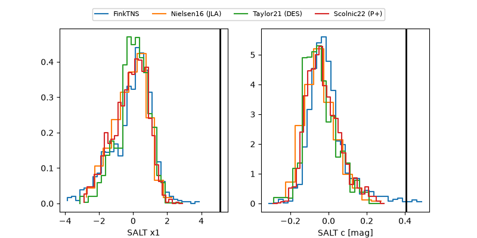

2026sra
Target 2026sra at 2026-07-24 13:36
Aliases and brokers:
FINK-ZTF: ztf.fink-portal.org/ZTF26abfqgvj
Lasair-ZTF: lasair-ztf.lsst.ac.uk/objects/ZTF26abfqgvj
ALeRCE-ZTF: alerce.online/object/ZTF26abfqgvj
YSE-PZ: ziggy.ucolick.org/yse/transient_detail/2026sra
TNS name: wis-tns.org/object/2026sra
Direct TNS query: direct search
alt names
ZTF26abfqgvj (ztf,fink_ztf)
2026sra (tns,yse)
Coordinates:
equatorial (ra, dec) = 346.5651,-13.24827
equatorial (HMS+DMS) = 23:06:15.62,-13:14:53.78
galactic (l, b) = (57.1515,-61.78308)
Flags:
TNS type: nan
peak dt: +11.3
Photometry:
last ztfg=19.98, ztfr=19.84
4 ztfg, 6 ztfr detections
Lightcurve

Visibility



Additional plots
